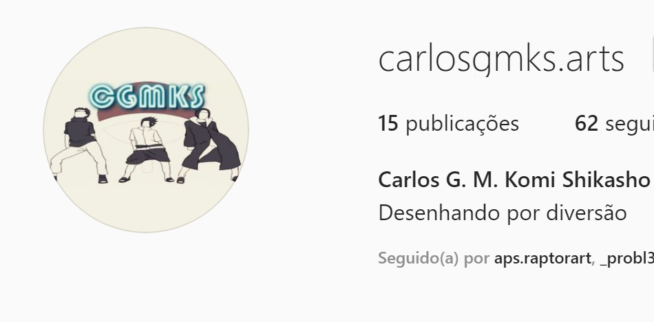
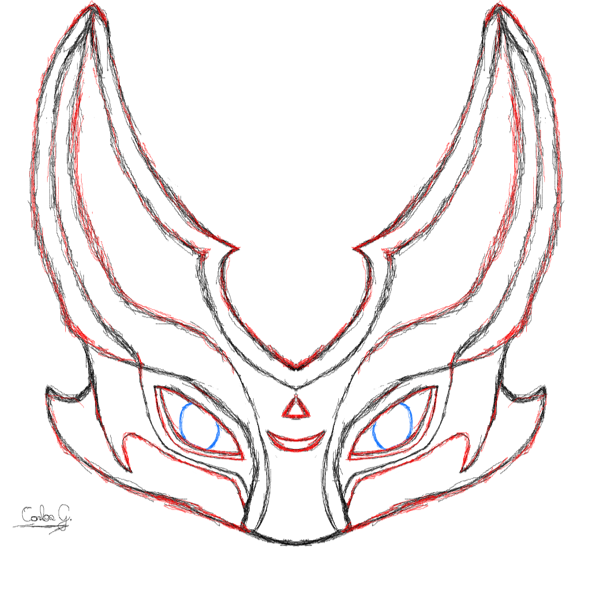

De: Carlos G. M. K. Shikasho
Desenhos
| Alguns anos átras eu descobri os animes, e me interessei pela arte de desenhar, comecei no papel fazendo algumas coisas básica, e acabei criando uns instagram com algumas fotos de desenhos meus. Instragram |  |
|  | Atualmente eu desenho no computador, utilizando o mouse e um programa chamado Krita e já postei um vídeo no youtube, uma speedart do desenho ao lado segue o link |